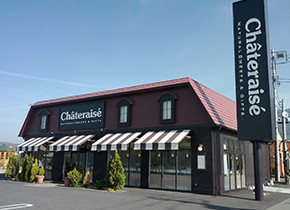
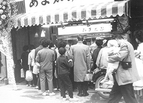

Hakushu mineral water, milk, eggs and seasonal fruits: nature provides such a variety of ingredients to our factory located in the middle of a forest in Yamanashi prefecture.
Do you know where Châteraisé products are made? This red-roofed building surrounded by lush forest is Chateraise Hakushu Factory. It is here that ice cream, cakes and traditional Japanese sweets are produced, using renowned Hakushu mineral water from the Southern Alps. Besides Hakushu Factory, we also produce Châteraisé products at the Nakamichi and Toyomi Factories – all located in Yamanashi prefecture. It all started back in 1954, when a tiny store called “Amataro” opened in Kofu City. Its signature product, also called amataro, was a sweet made with high quality ingredients such as sugar and azuki beans in “Imagawayaki” (pancake-like patties filled with sweet bean paste). Amataro went on to become a big hit with customers. Since then, the wish to “make truly delicious sweets using natural ingredients to make people happy” has always stayed with us as our number one principle.
 Wellbeing of our customers is our priority.That’s why we use more natural ingredients, and offer our products at the most affordable prices.We want to be a confectionery loved by all customers – with this wish in mind, we at Châteraisé are producing our products.
The pursuit of tastiness starts with our ingredients.
To deliver delicious sweets to our customers,we only use carefully selected, best-quality ingredients.